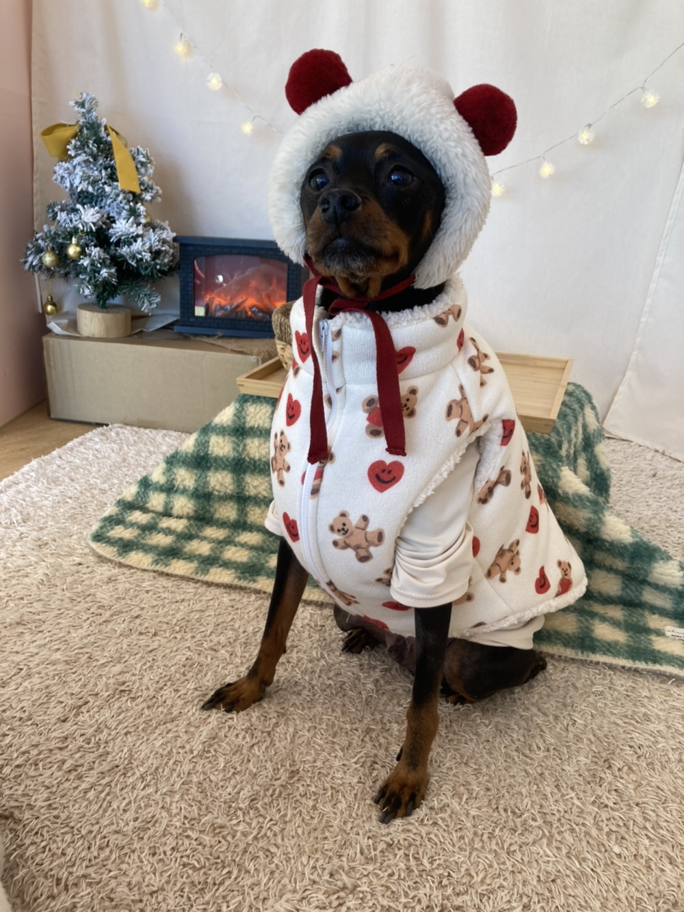
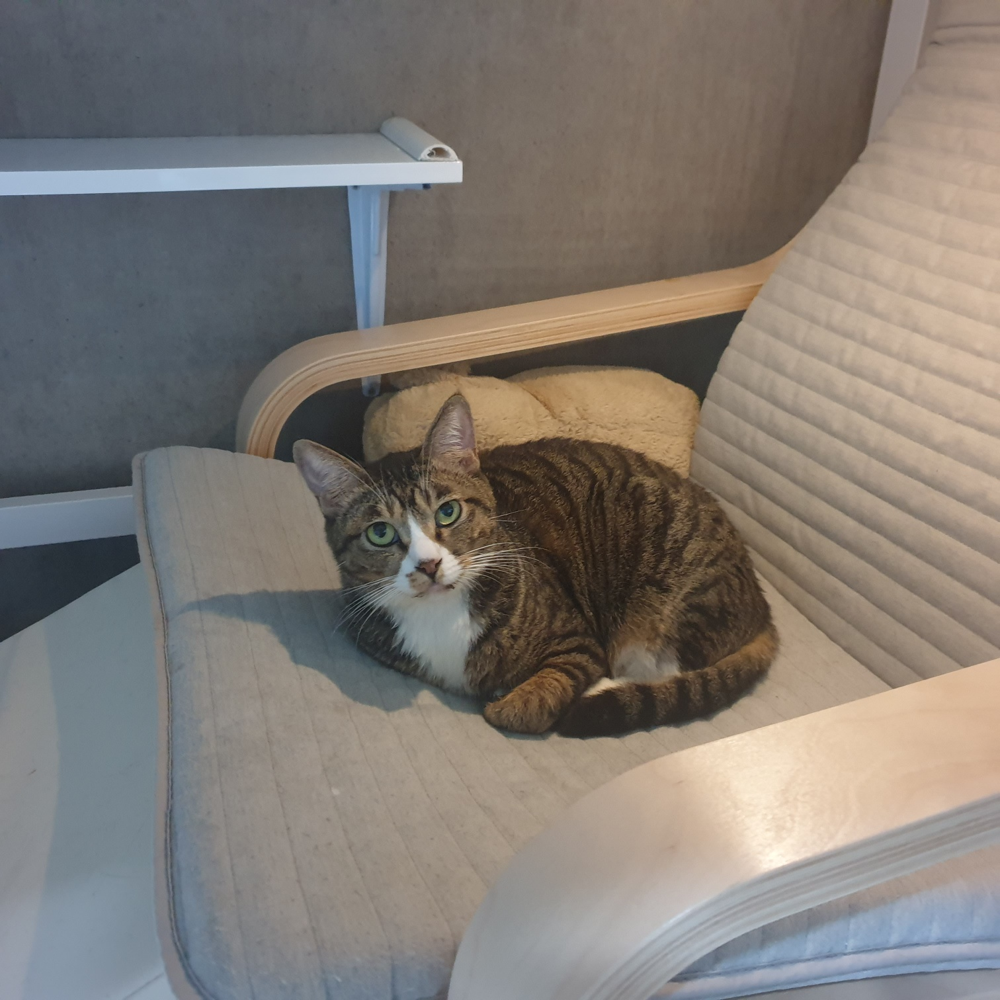
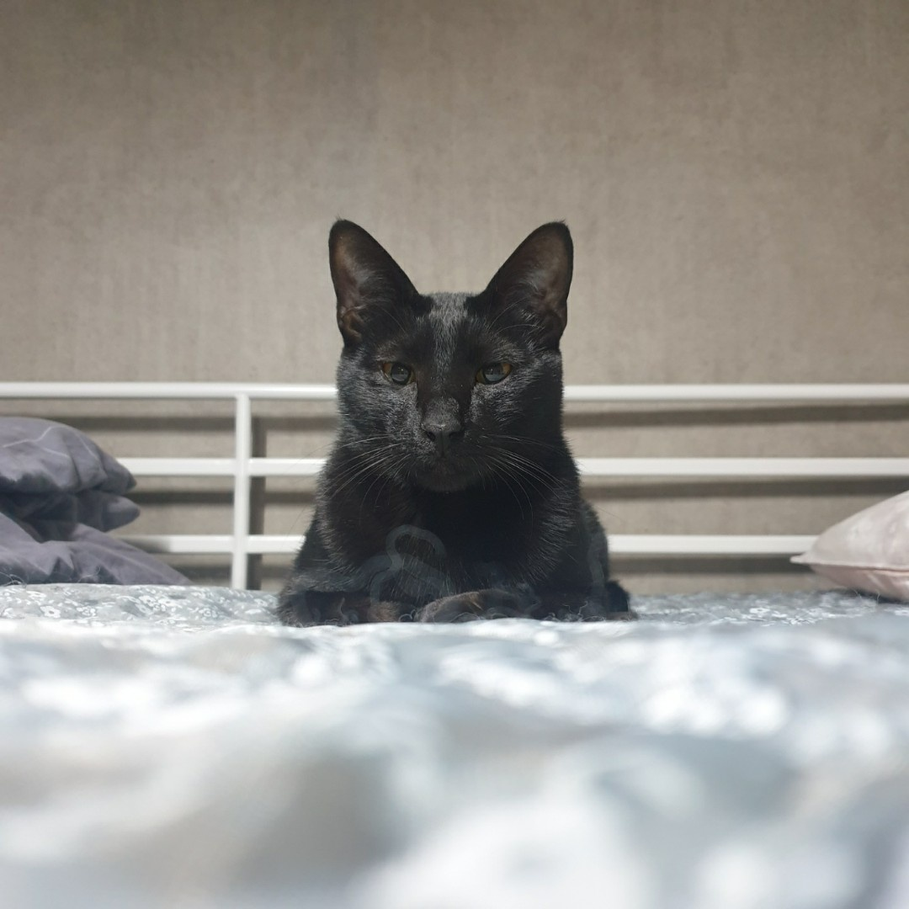
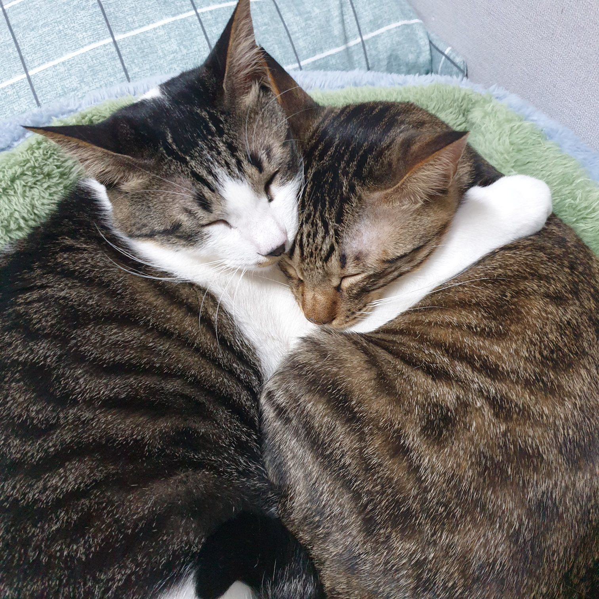

My hoby
- 자전거(클릭)
: 평소 운동을 정말 좋아합니다. 그래서 인지 수영, 자전거, 클라이밍
등 가리지 않고 조금씩 경험해봤는데 그 중에서도 자전거가 접근성도
좋았습니다. 재작년에 자전거를 처음 구매하고 국토종주를 다녀온 후에
작년에 친구와 동해안 종주를 떠난 기록입니다. 올해는 제주도
환상종주를 떠날 계획이 있는데 이 글을 보시는 분 중에 관심이
있으시면 언제든지 말씀해주세요.
- 블로그(클릭)
: 주식에 관심이 가서 주식 공부도 할겸 기록용으로 블로그를
시작했었습니다.현재는 블로그를 중단한 상태고 조만간 다시 할
예정입니다. 강제로 하는 것이 아닌 스스로 하는 것이기에 주식 및
경제공부가 재밌더라구요. 경제에 관해서 토론하는 것도 좋아하고,
아는 건 많이 없지만 궁금한 게 있으시면 이것 또한 언제든지
여쭤봐주세요.
- 헬스
My frends

- 이름 : 단지
- 종 : 미니어쳐 핀셔
- 나이 : 11살
- 특징 : 식탐이 강하고 1일 1산책을 해야 직성이 풀림.

- 이름 : 나비
- 종 : 코숏
- 나이 : 12살
- 특징 : 몸집이 작고 애교가 많다.

- 이름 : 옹이
- 종 : 코숏
- 나이 : 4살
- 특징 : 식탐이 강하고 엄청 순하다.

- 이름 : 사월,오월
- 종 : 코숏
- 나이 : 3살
- 특징 : 사월이는 애교가 많고 오월이는 덩치가 크다.
- [04.04] : HTML 연습1
- [04.05] : 소개페이지 만들기
- [04.06] : HTML,CSS 연습1
- [04.07] : HTML,CSS 연습2